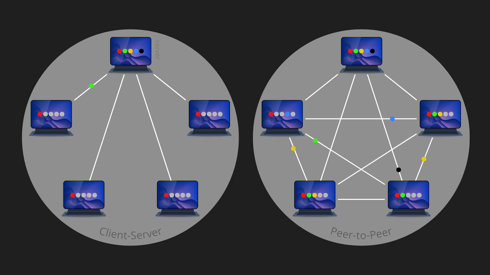
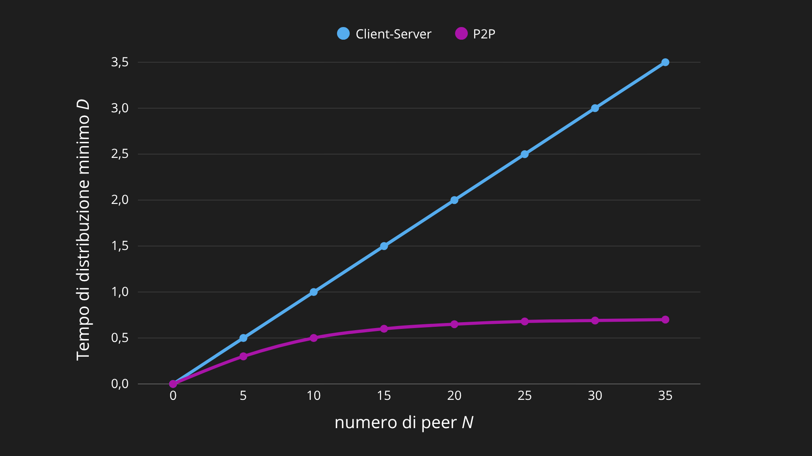
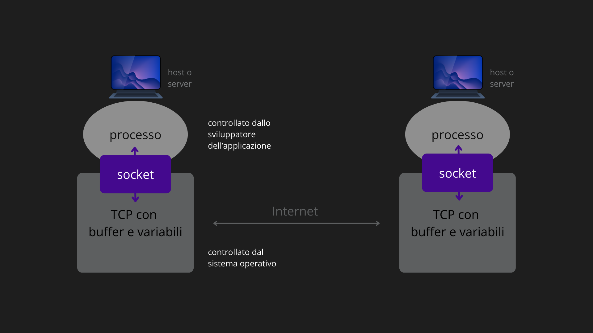
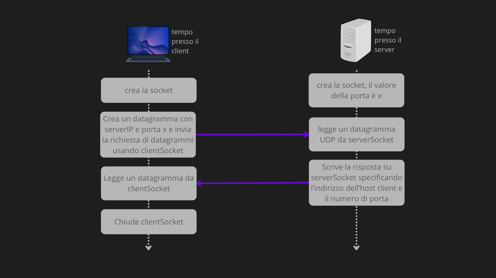
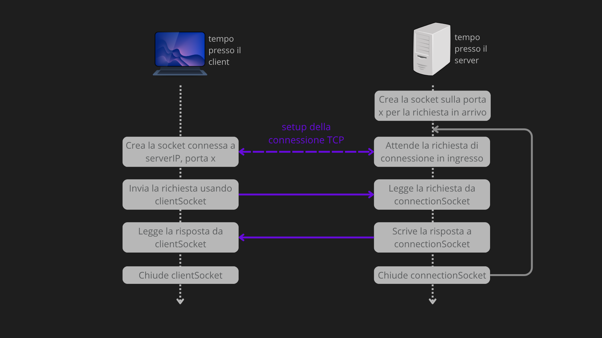
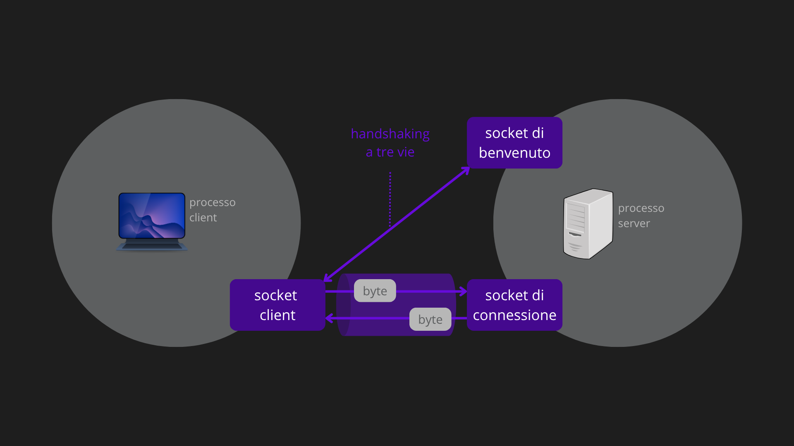

Il livello applicativo è la sede delle applicazioni di rete. Rappresenta l’interfaccia diretta tra l’utente finale e l’infrastruttura di rete sottostante. Qui il software scambia pacchetti di informazioni chiamati messaggi.
PARADIGMI DI COMUNICAZIONE
Perché due applicazioni possano scambiarsi dati, devono seguire un modello organizzativo comune (architettura logica). Esistono due paradigmi di comunicazione principali:

Architettura Client-Server
L’architettura Client-Server si fonda su una netta asimmetria tra gli host. Il fulcro del sistema è il Server, un’entità “always-on” dotata di indirizzo IP statico e noto, che agisce come fornitore di servizi in attesa di richieste. I Client, al contrario, sono host che iniziano la comunicazione solo al bisogno; essi operano tipicamente con indirizzi IP dinamici e non interagiscono mai tra loro, ma esclusivamente con il nodo centrale. Per gestire carichi di lavoro massivi (come nei servizi di Google o Amazon), la funzione del singolo server viene assolta dai Data Center: infrastrutture che coordinano migliaia di host per simulare un unico server virtuale ad altissime prestazioni. Questo modello garantisce un controllo centralizzato, tipico di servizi come il Web (HTTP), la posta elettronica e il trasferimento file (FTP).
Architettura Peer-to-Peer (P2P)
A differenza del modello precedente, il sistema Peer-to-Peer (P2P) riduce o elimina la necessità di un’infrastruttura centrale. In questo contesto, i nodi (denominati Peer) sono host gestiti dagli utenti finali che si connettono in modo intermittente e con indirizzi IP variabili. La caratteristica distintiva del P2P è la scalabilità: ogni nodo che si aggiunge alla rete non si limita a consumare risorse (download), ma contribuisce offrendo le proprie (upload), aumentando la capacità complessiva del sistema senza costi di manutenzione centralizzati o banda dedicata. Sebbene questo approccio sia efficiente per la distribuzione di massa (es. BitTorrent o Skype), la natura decentralizzata rende più complesso garantire standard elevati di sicurezza e affidabilità rispetto ai sistemi centralizzati.
Tempi di distribuzione a confronto
Il tempo di distribuzione è il tempo necessario affinché peer ottengano una copia di un file di dimensione . La distribuzione di un file di grandi dimensioni a un numero elevato di peer è uno scenario in cui il vantaggio del P2P è particolarmente evidente sul client-server.
Siano: la dimensione del file (in bit), il numero di peer destinatari, la banda di upload del server, e le bande di upload e download dell’i-esimo peer, la banda di download minima tra tutti i peer:
Architettura Client-Server:
In questo modello, il carico grava interamente sul server. Il tempo di distribuzione è limitato da due fattori:
- capacità del server: deve inviare copie del file ( bit), quindi impiega almeno .
- capacità del peer più lento: Il tempo non può essere inferiore a quello necessario al peer con download minimo per ricevere il file ().
Il tempo minimo di distribuzione è:
Architettura Peer-to-Peer:
Qui i peer non sono solo ricevitori, ma aiutano attivamente nella distribuzione ridistribuendo i bit già scaricati. Il tempo è limitato da tre fattori:
- invio iniziale: il server deve inviare ogni bit almeno una volta ().
- capacità del peer più lento: (come per client-server) Il tempo non può essere inferiore a quello necessario al peer con download minimo per ricevere il file ().
- capacità totale di upload: la velocità di distribuzione complessiva è data dalla somma della banda del server e di tutti i peer (). Il tempo minimo è quindi .
Il tempo minimo di distribuzione è:
Confronto visivo:

La differenza fondamentale risiede nella scalabilità:
- Client-Server: ogni nuovo peer aggiunge carico al sistema senza aggiungere risorse. Il tempo aumenta linearmente con il numero di utenti .
- P2P: Ogni nuovo peer è sia un carico che una risorsa di calcolo/banda. All’aumentare di , aumenta anche la capacità di upload totale del sistema.
Mentre la curva Client-Server cresce indefinitamente in modo lineare, la curva P2P si appiattisce, mantenendo i tempi di distribuzione contenuti anche per migliaia di utenti.
PROCESSI COMUNICANTI
Nel mondo delle reti, la comunicazione non avviene tra programmi generici, ma tra processi. Quando due processi risiedono sullo stesso computer, essi interagiscono attraverso le regole di comunicazione interprocesso stabilite dal sistema operativo locale. Tuttavia, nell’architettura Internet, l’interesse principale risiede nella comunicazione tra processi situati su host differenti. Questi sistemi remoti possono avere sistemi operativi diversi, ma riescono a dialogare scambiandosi messaggi attraverso la rete: un processo mittente crea e invia un messaggio, mentre il destinatario lo riceve e, se necessario, risponde.
Dinamica client-server nelle sessioni
Ogni applicazione di rete si basa su una coppia di processi comunicanti. Per identificare il ruolo di ciascuno durante una sessione, si utilizzano i termini client e server. Convenzionalmente, il client è il processo che assume l’iniziativa, contattando l’altro per avviare la comunicazione (modalità pull). Il server è invece il processo che rimane in attesa di essere contattato per erogare un servizio o fornire informazioni. Questa distinzione rimane valida anche nelle architetture Peer-to-Peer, sebbene un peer possa comportarsi sia come client che come server nel tempo, all’interno di una singola transazione di file chi richiede è il client e chi invia è il server.
L’indirizzamento: IP e numeri di porta
Affinché un messaggio raggiunga la sua destinazione, è indispensabile un sistema di indirizzamento preciso. In Internet, l’identificazione avviene su due livelli. Innanzitutto, è necessario l’indirizzo IP (livello di rete), un numero a 32 bit che identifica univocamente l’host sulla rete globale. Tuttavia, poiché su un singolo host possono essere attive contemporaneamente molteplici applicazioni, l’indirizzo IP non basta: occorre specificare anche un numero di porta (livello di trasporto). Questo identificatore permette di instradare il messaggio verso la socket specifica del processo destinatario. Alcuni servizi standard utilizzano numeri di porta ben noti e fissi, come la porta 80 per i web server (HTTP) e la porta 25 per i server di posta elettronica (SMTP).
Interfaccia socket
L’interazione tra un processo e la rete avviene attraverso un’interfaccia software chiamata socket. Per comprendere meglio questo concetto, si può immaginare il processo come una casa e la socket come la sua porta d’ingresso. Quando un processo vuole spedire un messaggio, lo spinge fuori dalla propria porta, confidando che l’infrastruttura di trasporto esterna lo conduca fino alla porta del processo di destinazione. Tecnicamente, la socket rappresenta l’interfaccia di programmazione (API) tra il livello applicativo e il livello di trasporto. Lo sviluppatore ha il controllo sul livello applicativo, ma può solo scegliere il protocollo di trasporto e regolarne alcuni parametri di base, lasciando al sistema operativo la gestione dei dettagli della trasmissione.

La figura mostra la comunicazione tra le socket di due processi che comunicano via Internet. Tale figura ipotizza che il protocollo di trasporto sottostante sia TCP. Come mostrato nella figura, una socket è l’interfaccia tra il livello di applicazione e il livello di trasporto all’interno di un host.
Programmazione delle socket
Abbiamo detto che un’applicazione di rete tipica è composta da un processo client e un processo server che comunicano leggendo e scrivendo su socket, ovvero le interfacce tra il livello applicativo e il livello di trasporto. Nella programmazione delle socket, che si tratti di applicazioni open source o applicazioni proprietarie, la prima scelta progettuale è il protocollo di trasporto utilizzato, ovvero UDP o TCP.
Socket UDP
In UDP, ogni pacchetto è indipendente. Prima di inviarlo, il mittente deve attaccare manualmente l’indirizzo di destinazione al pacchetto. L’indirizzo di destinazione è composto da due elementi: l’indirizzo IP dell’host destinatario (usato dai router per instradare) e il numero di porta della socket destinataria (usato dall’OS per consegnare al processo giusto). L’indirizzo sorgente viene aggiunto automaticamente dal sistema operativo, non dal programmatore.

UDPClient.py
# Importa il modulo socket di Python
from socket import *
# Nome o IP del server (es. '128.138.32.126')
serverName = 'hostname'
# Numero di porta del server
serverPort = 12000
# Crea la socket UDP lato client
# AF_INET → usa IPv4
# SOCK_DGRAM → tipo UDP (non TCP)
# Nota: il numero di porta del CLIENT non viene specificato → lo assegna l'OS
clientSocket = socket(AF_INET, SOCK_DGRAM)
# Legge input da tastiera
message = input('Frase in minuscolo:')
# Invia il messaggio al server
# .encode() converte stringa → bytes (necessario per la rete)
# .sendto() attacca l'indirizzo di destinazione (IP + porta) al pacchetto
clientSocket.sendto(message.encode(), (serverName, serverPort))
# Attende risposta dal server
# recvfrom(2048) → buffer massimo 2048 byte
# restituisce: (dati, indirizzo_sorgente)
modifiedMessage, serverAddress = clientSocket.recvfrom(2048)
# .decode() converte bytes → stringa
print(modifiedMessage.decode())
# Chiude la socket, termina il processo
clientSocket.close() UDPServer.py
from socket import *
serverPort = 12000
serverSocket = socket(AF_INET, SOCK_DGRAM)
# .bind() assegna ESPLICITAMENTE la porta nota alla socket
# '' = accetta connessioni su tutte le interfacce di rete dell'host
# Senza bind(), i client non saprebbero a quale porta inviare
serverSocket.bind(('', serverPort))
print("Il server è pronto a ricevere")
# Ciclo infinito: il server serve client all'infinito
while True:
# .recvfrom() blocca l'esecuzione finché non arriva un pacchetto
# message = dati ricevuti
# clientAddress = (IP_client, porta_client) → usato per rispondere
message, clientAddress = serverSocket.recvfrom(2048)
# Converte in maiuscolo
modifiedMessage = message.decode().upper()
# Risponde al client usando il suo indirizzo come destinazione
serverSocket.sendto(modifiedMessage.encode(), clientAddress)
# NON si chiude la socket
# Si torna in cima al ciclo e si aspetta il prossimo clientIn UDP il server usa una sola socket per tutti i client. Non crea nulla di nuovo per ogni client: legge il pacchetto, risponde, e aspetta il prossimo.
Socket TCP
TCP è connection-oriented: prima dello scambio dati, client e server eseguono un handshake a tre vie che stabilisce una connessione. A ogni connessione TCP sono associati sia l’indirizzo della socket client (IP + porta) sia quello della socket server (IP + porta). Una volta stabilita la connessione, i dati vengono inviati semplicemente scrivendoli nella socket, senza specificare l’indirizzo destinatario. TCP garantisce consegna affidabile e ordinata di tutti i byte.

TCPClient.py
from socket import *
serverName = 'servername'
serverPort = 12000
# Crea socket TCP
# SOCK_STREAM → tipo TCP (non UDP)
# AF_INET → IPv4
clientSocket = socket(AF_INET, SOCK_STREAM)
# .connect() avvia l'handshake a 3 vie con il server
# Dopo questa riga, la connessione TCP è stabilita
# Il numero di porta del client viene assegnato automaticamente dall'OS
clientSocket.connect((serverName, serverPort))
sentence = input('Frase in minuscolo:')
# .send() invia i dati nella connessione TCP già stabilita
# NON si specifica l'indirizzo di destinazione: è già nella connessione
# Differenza fondamentale rispetto a sendto() di UDP
clientSocket.send(sentence.encode())
# .recv(1024): riceve fino a 1024 byte dalla connessione TCP
modifiedSentence = clientSocket.recv(1024)
print('Dal server:', modifiedSentence.decode())
# Chiude la socket e quindi la connessione TCP
clientSocket.close()Il server TCP gestisce due tipi di socket distinte:
- Socket di benvenuto (serverSocket): rimane sempre aperta, in ascolto. È il “campanello” del server. Tutti i client “bussano” qui. Non trasporta mai dati applicativi.
- Socket di connessione (connectionSocket): viene creata dinamicamente dal server ogni volta che un client si connette. È dedicata esclusivamente a quel client. I dati applicativi passano qui.

TCPServer.py
from socket import *
serverPort = 12000
# Crea la socket di BENVENUTO (serverSocket)
# Questa socket non scambia mai dati applicativi
serverSocket = socket(AF_INET, SOCK_STREAM)
# Associa la porta nota
serverSocket.bind(('', serverPort))
# .listen(1): mette la socket in modalità ascolto
# Il parametro indica quante richieste tenere in coda
serverSocket.listen(1)
print('Il server è pronto a ricevere')
while True:
# .accept() blocca l'esecuzione finché un client non "bussa"
# Quando arriva, crea una nuova connectionSocket dedicata a quel client
# addr = indirizzo del client
connectionSocket, addr = serverSocket.accept()
# Da qui in poi si usa connectionSocket, non serverSocket
sentence = connectionSocket.recv(1024).decode()
capitalizedSentence = sentence.upper()
connectionSocket.send(capitalizedSentence.encode())
# Chiude la connessione con QUESTO client
# serverSocket rimane aperta → pronta per il prossimo client
connectionSocket.close()Ogni volta che un client si connette, accept() crea una connectionSocket nuova e dedicata. Quando la comunicazione finisce, si chiude solo quella. La serverSocket rimane sempre aperta, pronta ad accettare il prossimo client.
APPLICAZIONI DI RETE
Un’applicazione di rete è un software progettato per funzionare su più dispositivi collegati tra loro (tramite Internet o una rete locale), permettendo loro di comunicare e scambiarsi dati. A differenza di un’app stand-alone (che gira solo su un computer senza bisogno di connessione), un’applicazione di rete divide il lavoro tra client (es. il browser dell’utente) e server (es. il computer di Google). Le applicazioni di rete più importanti e maggiormente diffuse sono: il Web, la posta elettronica, il DNS (applicazione di servizio), la distribuzione di file e lo streaming video.
PROTOCOLLI APPLICATIVI
Un protocollo a livello di applicazione è il cuore normativo che permette a processi eseguiti su sistemi diversi di interagire in modo ordinato. La sua funzione principale è stabilire uno standard comunicativo comune, definendo con precisione quattro elementi fondamentali:
- la tipologia dei messaggi scambiati, come quelli di richiesta o risposta
- la loro sintassi, ovvero quali campi compongono il messaggio e come sono strutturati
- la semantica, che chiarisce il significato specifico delle informazioni contenute in ogni campo
- le regole temporali e procedurali che determinano quando e in che modo un processo deve inviare un messaggio o rispondere a quello ricevuto.
N.B. Mentre l’applicazione rappresenta l’intero servizio offerto all’utente, comprendendo interfacce, server e contenuti come le pagine HTML o le caselle mail, il protocollo ne è solo la componente tecnica che governa lo scambio dei dati. Ad esempio, nel vasto ecosistema del Web, il protocollo HTTP è la specifica che permette al browser di comunicare con il server, ma non coincide con il browser stesso né con i file che visualizziamo. Questa separazione garantisce che software sviluppati da aziende diverse possano collaborare, purché rispettino le medesime regole definite dal protocollo, sia esso di pubblico dominio come quelli descritti nelle RFC o privato come nel caso di Skype.